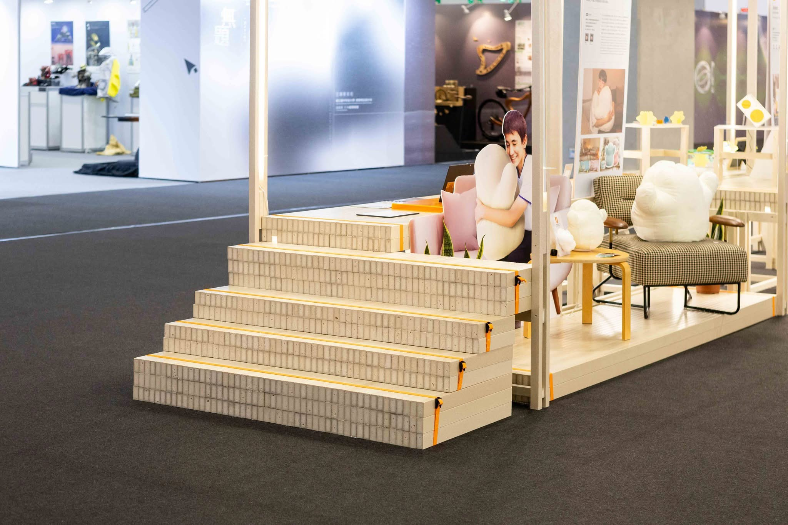

配置與外形
展區平面、展台輪廓、構件尺寸與展品配置。
EXHIBITION / MATERIAL APPLICATIONS
展場需要陳列作品，也需要讓人行走與停留。捷綠盟提供的展場紀錄，從框架、平台到弧形展台，讓板材與型材的應用討論更具體。
提出選材需求 ↗閱讀產品目錄 ↗
新一代設計展照片呈現展示框架、平台與座席的配置。選材從構件尺寸與陳列需求開始，再核對板厚、型材、接合與運輸拆裝。
另一組展場照片呈現弧形展台與植栽、展牆之間的空間關係。曲線外形需連同分件、板件與固定討論；實際加工方法與用料型號依專案紀錄核對。
展區平面、展台輪廓、構件尺寸與展品配置。
板厚、孔位、五金、分件圖面與安裝範圍。
展期、數量、運輸、組裝、收納及後續再利用安排。

階梯與展示平台把板件的配置放到眼前。材料討論可以從踏面、側板、框架與接合開始，將構件尺寸、預計使用方式與拆裝條件放進同一份需求。
照片是應用紀錄，不推定每個構件的型號或加工方法；捷綠盟材料供應與施工分工依原案確認。
討論展場材料需求 ↗照片是應用紀錄；材料型號、構件尺寸與製作方式依個別專案確認，不視為統一標準品。